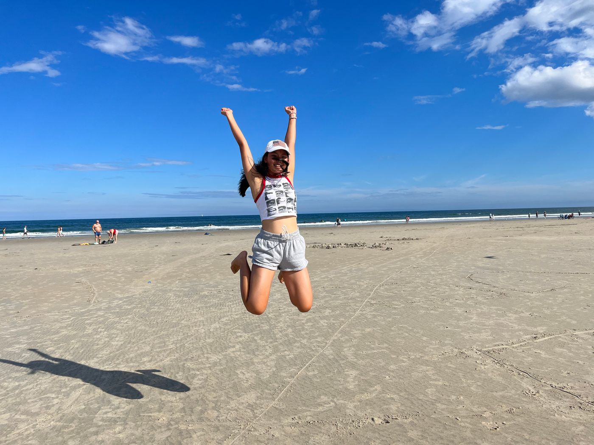
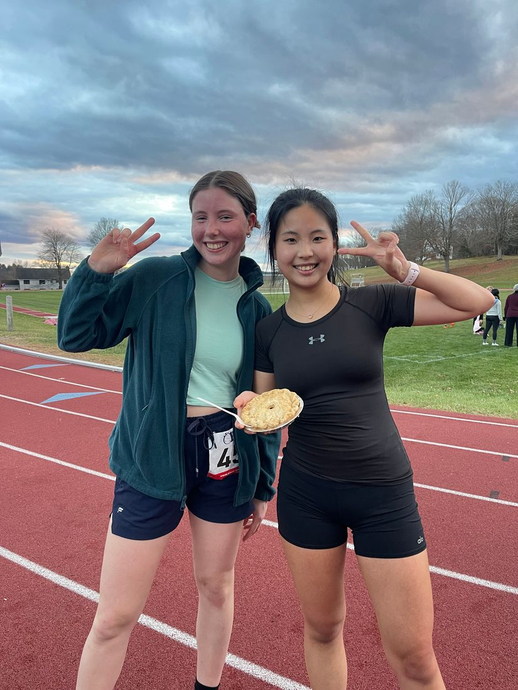
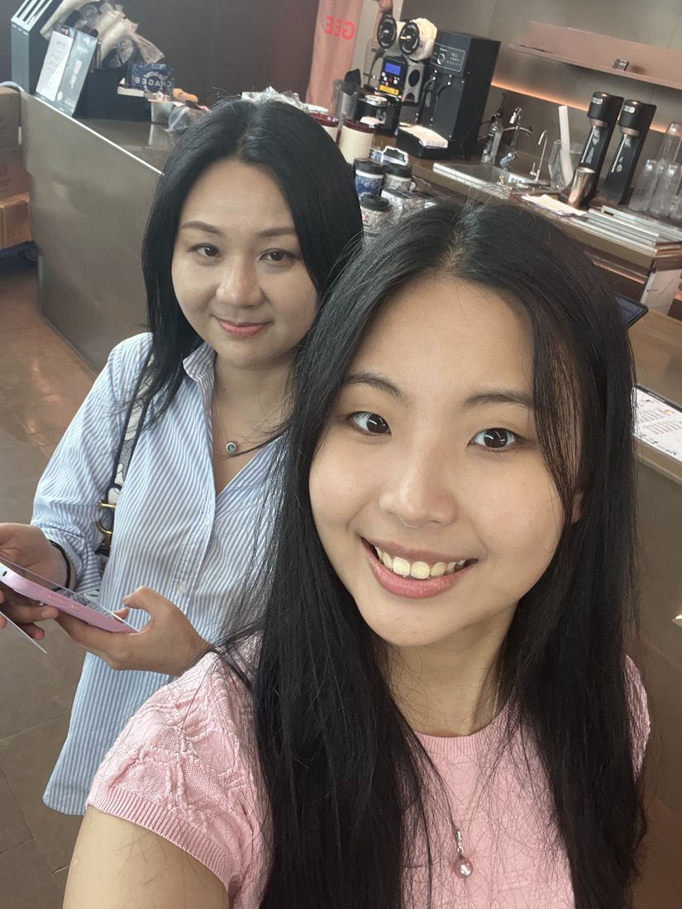
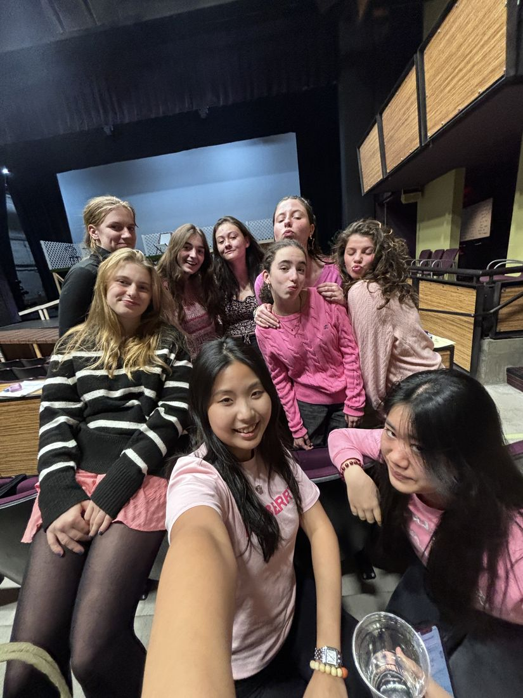

hi, I'm
Skylar Tian
Mathematics & Computer Science · Columbia University · Class of 2028
I study math and computer science at Columbia and work on statistical modeling, from factor models on Chinese A-shares to brain-state models of neural recordings. I trained in market-making at Jane Street, and I'm looking for quantitative research and trading roles.
- 3.94 GPA Dean's List every semester
- USAMO Participant USA Mathematical Olympiad
- 11/15 AIME Also a USAPhO qualifier
- Laidlaw Scholar 1 of 25 at Columbia College
Selected work
Models I've built
E Fund Management · Hong Kong
Deviation salience strategy
Industry-relative salience signals and double-sorted portfolios on Chinese A-shares, tested with Fama–MacBeth regressions and Newey–West inference.
7portfolio specifications
Zuckerman Institute · Paninski Lab
Neural dynamics and behavior
Compressed local field potential recordings, then modeled shared and region-specific brain states with HMMs and switching linear dynamical systems.
95%fewer spatial dimensions
Laidlaw Foundation · New York
Equitable food routing
A vehicle-routing model over 528 NYC food pantries and community kitchens, comparing five allocation policies weighted by food insecurity.
57.7%high-need coverage, up from 26.3%
Columbia Alpha Partners
Structural copper pricing
Turned supply disruptions and demand from AI data centers, electric vehicles and grid build-out into a structural model of the copper price.
500Monte Carlo simulations
Video
A two‑minute hello
Drone footage, representing the math department at open house, and friends. It first ran on my old website.
Off the clock
Life outside the models




Outside class
- Columbia Sailing Team
- Harp, operatic singing, flute, guitar and piano
- Undergraduate Math Journal
- Treasurer, Columbia Alpha Partners
Let's talk
I'm looking for quantitative research and trading roles. Email is the fastest way to reach me.
h.tian@columbia.edu- New York, NY
- GitHub
- Columbia College '28